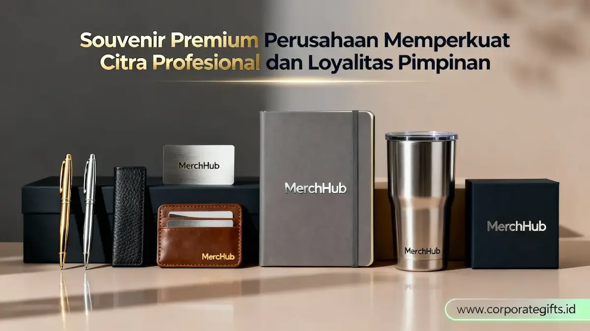

Corporate Gifts ID - Souvenir premium perusahaan untuk pimpinan adalah cenderamata korporat eksklusif bernilai tinggi yang dirancang khusus bagi kalangan dewan direksi, dewan komisaris, maupun mitra bisnis strategis guna menyampaikan rasa apresiasi tulus sekaligus mengokohkan citra profesional institusi secara nyata.
Kategori produk ini mengedepankan penggunaan material berkualitas tinggi seperti kulit sapi asli (genuine leather), logam solid anti-karat, dan kayu alami berbobot mantap. Setiap item dipadukan dengan teknik personalisasi presisi seperti laser engraving atau emboss timbul guna memancarkan aura wibawa yang elegan dan berkelas.
Poin Kunci Souvenir Premium Pimpinan:
- Nilai Filosofis: Berperan sebagai media komunikasi strategis non-verbal yang merefleksikan standar mutu dan apresiasi tinggi korporasi.
- Kurasi Material: Memprioritaskan bahan kulit asli, logam solid, dan kayu alami dengan teknik gravir laser atau deboss yang subtle.
- Sentuhan Personal: Ukiran nama pimpinan atau inisial jabatan melipatgandakan persepsi nilai emosional dan brand recall jangka panjang.
- Investasi Berkelanjutan: Menghasilkan word-of-mouth positif dan memperkuat reputasi kredibel di hadapan mitra bisnis dan investor.
Apa Itu Souvenir Premium Perusahaan dan Mengapa Penting bagi Pimpinan?
Souvenir premium perusahaan untuk pimpinan adalah instrumen cenderamata kelas atas yang dikonsep secara spesifik bagi para pengambil kebijakan korporat. Hal ini membuatnya berbeda secara mendasar dari barang merchandise promosi biasa yang kerap dibagikan secara massal pada kegiatan seremonial terbuka.
Hadiah eksklusif ini berfungsi sebagai media komunikasi strategis non-verbal. Benda ini secara langsung menegaskan bahwa perusahaan sebagai institusi sangat menghargai kontribusi, pencapaian, serta integritas kepemimpinan para figur sentralnya. Di level manajemen puncak dan dewan komisaris, kaliber sebuah suvenir secara harfiah merepresentasikan kematangan profesionalisme dan standar mutu institusi itu sendiri.
Perusahaan modern kini mengalokasikan anggaran souvenir pimpinan bukan sekadar sebagai pemanis seremoni tahunan, melainkan sebagai aset branding korporat berbobot tinggi. Tujuannya adalah memperkuat ikatan struktural dan emosional antara jajaran pimpinan dengan korporasi, sembari memproyeksikan citra positif di hadapan mitra bisnis dan calon pemodal.
Apa Makna Strategis di Balik Pemberian Souvenir Eksklusif untuk Pimpinan?
Pemberian suvenir bermutu tinggi kepada jajaran komisaris, direksi, maupun mitra strategis sejatinya merupakan manifestasi penghormatan tertinggi atas komitmen dan dedikasi yang mereka curahkan bagi pertumbuhan organisasi. Lebih dari itu, mutu suatu hadiah mampu memvisualisasikan filosofi serta visi yang dipegang teguh oleh perusahaan.
1. Memperkuat Loyalitas dan Rasa Dihargai Pimpinan
Suvenir yang disiapkan secara spesifik, berkelas, dan memiliki sentuhan personal terbukti mampu menyentuh aspek afeksi, memupuk rasa bangga, dan mempertebal rasa memiliki (sense of belonging) para pemimpin terhadap perusahaannya. Bentuk apresiasi berwujud fisik premium jauh lebih membekas di memori dibandingkan piagam konvensional atau pujian lisan, sehingga menciptakan ikatan batin yang langgeng.
2. Membangun Citra Positif di Mata Mitra dan Investor
Kehadiran suvenir eksklusif sukses mendongkrak persepsi nilai (perceived value) perusahaan di mata para pemangku kepentingan eksternal. Ketika mitra bisnis atau penanam modal melihat standar tinggi dan kepresisian dari hadiah yang mereka terima, mereka secara alamiah menilai perusahaan tersebut sebagai entitas bisnis yang kredibel, terpercaya, dan mapan.

Pilihan set alat tulis, notebook kulit, dan tumbler premium untuk cenderamata pimpinan.
Pilihan Souvenir Premium yang Relevan untuk Komisaris dan Eksekutif di 2026
Berikut adalah kurasi lini cenderamata eksekutif yang dinilai paling relevan dan banyak diminati oleh kalangan dewan komisaris serta pimpinan perusahaan modern:
- Set Alat Tulis Eksklusif: Pena berbobot mantap dari material logam mulia yang dipadukan bersama buku catatan hardcover berlogo elegan. Kombinasi ini menghadirkan paket corporate gift set fungsional yang bernilai prestisius.
- Aksesori Kulit Personal: Perlengkapan kantor seperti card holder, dompet passport, dan map dokumen berbahan kulit asli pilihan senantiasa memancarkan aura elegan. Tambahan ukiran inisial nama penerima menjadikannya hadiah yang berharga secara emosional.
- Gawai Kerja Cerdas: Perangkat teknologi modern seperti powerbank berbalut kulit premium, wireless charging station multifungsi, atau smart desk clock sangat efektif mendukung tingginya mobilitas eksekutif.
- Plakat Kristal Optik & Miniatur Logam: Plakat dari kristal murni dengan grafir laser 3D di bagian dalam atau miniatur ikonik kantor pusat merupakan simbol pencapaian prestisius yang pantas dipajang di ruang kerja pimpinan.
- Perangkat Meja Kerja Eksekutif (Desk Organizer): Meja kerja pimpinan akan tampak paripurna dengan set organizer paduan material kayu jati pilihan dan logam solid yang dilengkapi ukiran nama sang eksekutif.
Elemen Desain Apa yang Menentukan Kelas Sebuah Souvenir Korporat?
Status eksklusif dari suatu cenderamata korporat tidak semata-mata diukur dari nominal harga pengadaan, melainkan dari perpaduan desain holistik, kurasi material unggulan, dan teknik presentasi kemasan. Tiga parameter berikut menjadi penentu mutlak terbentuknya persepsi kemewahan di mata penerima tingkat pimpinan:
| Elemen Desain | Standar Umum / Biasa | Standar Premium Corporate Gifts ID |
|---|---|---|
| Material Dasar | Plastik daur ulang ringan atau pelat seng tipis | Logam solid padat, kulit sapi asli (genuine leather), kayu alami |
| Finishing Logo | Sablon cat berukuran besar dan mencolok | Emboss, deboss halus, serta grafir laser presisi tinggi yang elegan |
| Kualitas Kemasan | Kardus tipis polos tanpa lapisan pelindung | Rigid hardbox berlapis bludru/satin, kartu ucapan personal tertanda resmi |
Prioritaskan bahan yang memiliki bobot mantap dan tekstur berkarakter agar saat digenggam langsung memberikan impresi berkelas. Pada kacamata eksekutif, gaya desain wajib mengedepankan estetika minimalis modern tanpa visual berlebih.
Souvenir sebagai Instrumen Strategi Branding Internal
Peran suvenir kini meluas melampaui materi pemasaran eksternal. Dalam lingkup korporasi, hadiah bermutu menjadi tonggak internal branding untuk menumbuhkan rasa bangga dan sinergi lintas hierarki, mulai dari karyawan berprestasi, jajaran direksi, hingga dewan komisaris. Cenderamata yang digarap serius menegaskan bahwa institusi konsisten menjunjung standar mutu tertinggi di setiap lini.
Apa Manfaat Jangka Panjang Souvenir Premium bagi Reputasi Perusahaan?
Pengadaan cenderamata level pimpinan memberikan imbal balik strategis yang melampaui momen serah terima acara. Tiga pilar manfaat berikut patut diperhitungkan secara saksama oleh tim Corporate Communications dan Procurement:
1. Menumbuhkan Loyalitas dan Kepuasan Batin Pimpinan
Hadiah yang tepat guna, berbobot, dan sarat penghargaan mampu menumbuhkan rasa kepemilikan yang lebih mendalam terhadap institusi. Hal ini memperkuat sinergi profesional menjadi kemitraan batin yang kokoh dalam mengarungi dinamika bisnis bersama.
2. Menciptakan Reputasi Positif dan Word-of-Mouth Elegan
Sifat alamiah dari produk istimewa dengan sendirinya memantulkan karakter perusahaan yang bermutu tinggi. Ketika suvenir tersebut digunakan dalam pertemuan bisnis lintas instansi dan menuai pujian kolega, tercipta pemasaran lisan (word-of-mouth) positif yang mengangkat citra perusahaan secara elegan.
3. Menjadi Instrumen Investasi Visual Berkelanjutan
Cenderamata VIP yang awet digunakan sepanjang tahun menjadi media paparan identitas merek yang konstan. Dampak eksposur organik ini mampu menyaingi strategi kampanye merchandise akhir tahun musiman, menjadikannya sarana investasi reputasi berjangka panjang.
Pertanyaan Seputar Souvenir Premium Pimpinan (FAQ)
Kesimpulan & Rekomendasi Pemesanan
Pemberian souvenir premium untuk pimpinan hendaknya diposisikan sebagai investasi strategis yang bernilai ganda: mengukuhkan kultur profesionalitas korporasi sembari merekatkan sentimen personal antara manajemen dan figur puncaknya.
Wujudkan ekspektasi cenderamata eksekutif terbaik yang merefleksikan martabat dewan pimpinan Anda. Jelajahi katalog lengkap produk premium di Corporate Gifts ID dan mintalah sampel mockup digital gratis untuk kebutuhan pengadaan perusahaan Anda hari ini.